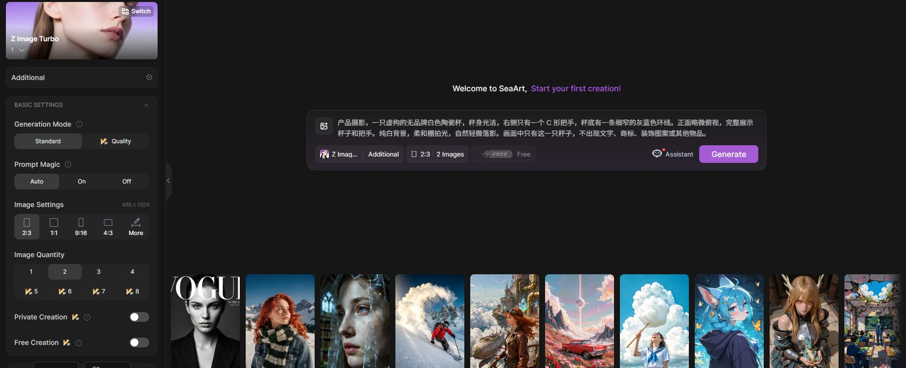

P25-seaart-E1 · 用户自述
评价A自称meme创作者，称教程有帮助并肯定年度套餐。
2025-03-05 · 观察：2026-09-10
公开账号观察；满意表达不是订阅付款核验或社媒商业成功。
SeaArt 用户会生成图片和meme、围绕角色聊天或玩RPG，也会发布资源。角色互动与图片生成是不同任务。长期使用评价中既有认可，也有搜索、资源规则和订阅问题；工具入口集中并不意味着每项任务都更容易完成。
| 内容使用者 | 内容供给者 | 付款方 |
|---|---|---|
| 生成图片、制作meme、搜索模型和角色互动者；消费任务不能由一个兴趣标签概括。 | 模型、AI应用及角色作者；个人自建角色不等于受审核的收费作者。 | 平台订阅/资源购买与作者订阅两条关系；持续使用未必持续付费，付款自述未核账单。 |
美国区App Store公开评价；涉及网页与iOS · 有用户线索的候选画像
| 观察点 | 群体占比 |
|---|---|
| 4个可区分用户点 | 未知 |
| 问题 | 具体材料 |
|---|---|
| 任务 | 寻找适合的模型，生成自己的图，保存或用于分享。 |
| 触发 | 已有想表达的主题，或要继续使用熟悉的风格资源。 |
| 希望取得的结果 | 能找到模型、获得满意图像并方便管理。 |
| 困难 | 搜索和资源发现；网页与App操作差异；生成后找文件与功能 |
| 需要的内容 | 作品对应模型、加载方法、简短使用教程、结果整理方法。 |
| 替代方法 | 其他图像平台、本地生成及传统编辑；未核每位评价者的替代选择。 |
| 持续使用记录 | 4位可区分评价者分别提到meme、寻找模型、文件管理和长期生图；有使用一年及近两年的自述，但不是留存统计。 |
| 回访假设 | 熟悉模型与持续的新题材可能形成回访。 |
| 付费记录 | 其中有年度套餐肯定；未核真实购买及是否为了商业内容。 |
SeaArt Cyberpub/AI角色；公开消费自述 · 有用户线索的候选画像
| 观察点 | 群体占比 |
|---|---|
| 2个可区分用户点 | 未知 |
| 问题 | 具体材料 |
|---|---|
| 任务 | 与预设角色对话、构建或继续互动情境。 |
| 触发 | 想进入一个角色或游戏情境，而不是只要一张图。 |
| 希望取得的结果 | 角色能维持可继续的互动，资源消耗容易理解。 |
| 困难 | 互动资源规则难理解；额度限制可能中断情境；角色创建与普通生成不是同一步骤 |
| 需要的内容 | 角色开场、情境、行为示例、使用条件及边界说明。 |
| 替代方法 | 其他角色聊天/RPG工具；替代行为尚未观察。 |
| 持续使用记录 | 2条不同评价明确谈Cyberpub和RPG，后者同时自建多个AI；没有对话深度、留存天数与效果核验。 |
| 回访假设 | 未结束的情境与熟悉角色是可能回访理由。 |
| 付费记录 | 付费状态未知；对credits/stamina的疑惑不能当官方扣费算法。 |
个人自建AI角色的1条自述；模型/工具持续供给仅有官方规则 · 有角色供给线索的候选画像
| 观察点 | 群体占比 |
|---|---|
| 1个可区分用户点 | 未知 |
| 问题 | 具体材料 |
|---|---|
| 任务 | 为自己的RPG或互动创建AI角色；是否发布给别人和持续维护未确认。 |
| 触发 | 自己要使用角色或情境；商业供给的启动原因没有普通作者自述。 |
| 希望取得的结果 | 让角色服务互动情境；商业资源作者希望被采用和订阅是官方目标。 |
| 困难 | 需要持续更新而非只发一次；资源资格审核与用户预期；免费内容和付费内容边界 |
| 需要的内容 | 输入与效果说明、维护记录、适用版本、人设/情境、订阅内容边界。 |
| 替代方法 | 其他模型/角色社区、独立资源销售；未核实际迁移。 |
| 持续使用记录 | 1位自建角色者已在上一画像计入，不重复计总人数；原始模型与工具作者没有新增独立使用记录，商业供给仍为官方目标。 |
| 回访假设 | 订阅关系和反馈可能支持继续维护，未得到收入或停更数据。 |
| 付费记录 | 官方有审核后的作者订阅机制；规则金额与奖励不是任何个体的实收。 |
| 产品提供 | 内容形态 | 如何发挥作用 | 观察结果 | 剩余工作 |
|---|---|---|---|---|
| 图像/视频/AI Apps入口，模型与作品详情，推荐和相关资源 | 结果作品、模型卡、输入表单、教程 | 官方2.0将输入、预览和相关内容集中，帮助从示例进入生成。 | 评价可见有实际生图和找模型任务；入口整合是否减少试错未测。 | 推荐与使用量不等于自己的素材会成功；未核普通用户选择到采用的漏斗。 |
能力与使用任务已确认
| 产品提供 | 内容形态 | 如何发挥作用 | 观察结果 | 剩余工作 |
|---|---|---|---|---|
| Cyberpub/AI角色及角色创建能力 | 人设、开场、情境、示例对话 | 作者设定可互动对象，使用者在情境内继续。 | 公开评论确认角色/RPG用途；未读私人对话，不推关系质量。 | 资源规则、角色持续性和用户为何退出未知；不能把角色数变为真实聊天人数。 |
公开使用自述
| 产品提供 | 内容形态 | 如何发挥作用 | 观察结果 | 剩余工作 |
|---|---|---|---|---|
| 审核后的作者订阅、收益与曝光机制 | 模型/应用订阅内容及作者维护说明 | 把持续供给资格、资源访问与订阅关系连接起来。 | 官方列出持续输出要求、付费订阅有效条件和收益处理；没有普通订阅者结果。 | 未核留存、净收入和维护工时；角色个人创建也不能证明参与商业计划。 |
规则存在；作者收入未证实
| 产品提供 | 内容形态 | 如何发挥作用 | 观察结果 | 剩余工作 |
|---|---|---|---|---|
| 公开订阅规则与用户反馈 | 作者订阅规则、公开使用争议和相反自述 | 规则解释资源和订阅关系，公开讨论揭示部分实际体验；反馈渠道是否有效未证实。 | 同一讨论既有订阅无问题，也有取消订阅与资源访问投诉。 | 投诉未核账单和全量上下文，不能作为诈骗结论或满意率。 |
相反自述并存
评价A自称meme创作者，称教程有帮助并肯定年度套餐。
2025-03-05 · 观察：2026-09-10
公开账号观察；满意表达不是订阅付款核验或社媒商业成功。
评价B自述使用一年，需沿作者关系找模型，更新后此路径受限。
页面仅写Jan 11 · 观察：2026-09-10
未显年份；不复述账号关系，不推平台当前全部搜索表现。
评价C肯定图像生成，但认为文件管理和功能寻找麻烦。
2024-09-28 · 观察：2026-09-10
历史iOS体验；不能推当前各端均相同。
评价D称已使用近两年，认可图像和同订阅中的新增功能。
2025-05-22 · 观察：2026-09-10
自述持续使用，未核每月活跃或持续付款。
评价E称最喜欢Cyberpub用户角色聊天，也会生成图片。
2024-05-09 · 观察：2026-09-10
只计1个公开账号，不按两种动作算两人。
评价F称主要用于AI RPG并自行建过多个AI，同时不理解credits/stamina关系。
页面仅写Jun 1 · 观察：2026-09-10
消费与供给重叠，跨画像同一key去重；其扣费解释不作平台规则。
作者订阅计划面向持续高质量供给者，需审核，付费与至少一次有效使用等条件构成有效订阅。
更新2025-12-20 · 观察：2026-09-10
规则要求不是已经存在的大规模有效订阅。
作者订阅计划说明分成、处理费、结算及提现门槛，并保护既有免费内容。
更新2025-12-20 · 观察：2026-09-10
读原文；不以奖励示例当作者实际到手，未执行订阅。
SeaArt2.0公告列图像、视频和AI Apps入口，以及输入/预览/相关内容整合和自然语言Agent。
2026-06-18 · 观察：2026-09-10
官方产品定位，未验证自动选择或效率承诺；示范评论不能计普通用户点。
角色创建指南列Persona、First Message、Scenario和Example Dialogue等字段。
发布日期未标 · 观察：2026-09-09
沿用content-depth原文记录；字段存在不证明真实对话质量。
Reddit订阅争议帖一回复称自夏季持续订阅无问题，另一回复称因旧资源受限制而取消。
2025-12-22至12-23 · 观察：2026-09-10
补充正反使用背景；未核付款及内容处置详情，不计入上述任务画像，避免无任务身份的混数。
Apple托管的公开用户评价 · 各评论日期分别记录 · 查阅：2026-09-10
全文读取；同一评价在页面重复渲染仅计1次，开发者回复不计用户，不转存昵称或头像。
SeaArt · 更新2025-12-20 · 查阅：2026-09-10
公开正文已读；未登录、未运行或付费。
SeaArt · 2026-06-18 · 查阅：2026-09-10
公开正文已读；未登录、未运行或付费。
SeaArt · 发布日期未标 · 查阅：2026-09-09
沿用content-depth.json中2026-09-09已读原文记录。
Reddit公开用户 · 2025-12-22起 · 查阅：2026-09-10
读取正文；不采原帖指控作为事实结论，未读取或保存付款资料。
SeaArt资源包括可运行表单、操作文章和模型信息。表单接受输入，文章解释配置与排错，模型页注明底模、触发词和来源；封装工具仍可能需要使用者自行判断首次配置。
一项可执行的视频处理工具
| 样例 | 可以取得什么 | 后续动作 | 条件与限制 |
|---|---|---|---|
| 日文“视频加文字”应用。 | 在线执行界面及使用说明；未提交。 | 准备视频和文字后设置参数。 | 文本抓取未保留所有无标签输入值；不能认定默认项正确。 |
解释两款工具差异与参数的图文说明
| 样例 | 可以取得什么 | 后续动作 | 条件与限制 |
|---|---|---|---|
| 《视频字幕/视频文字 两款应用》。 | 教学和排错，可指导设置但没有配置文件。 | 根据视频尺寸、字幕位置与时段配置。 | 依赖该作者工具；含作者报告的平台校验问题，未独立验证。 |
一项LoRA资源及版本说明
| 样例 | 可以取得什么 | 后续动作 | 条件与限制 |
|---|---|---|---|
| 服装LoRA“set”页面标来源Civitai。 | 资源元信息与使用说明。 | 可查看来源、选择版本或在线创作；未下载。 | 页面日期不一致，权限图标状态未完整提取，不判断所有许可选项均开放。 |
单个作者的一项工具及说明；日文正文，只读。
| 材料部分 | 观察到什么 | 作用分析 |
|---|---|---|
| 输入与开关 | 表单显示视频上传、音频开关、三组文字和淡入淡出开关。 | 分析：用户操作不止输入提示词，必须决定哪些元素生效。 |
| 位置与时段 | 文章用X/Y说明位置，用Start/End指定显示帧区间。 | 分析：将审美目标转成坐标和时间控制。 |
| 校验与字体限制 | 作者说明未启用块也不宜留空，并提示部分字体可能缺字。 | 分析：解释表单校验和素材语言造成的失败；不是模型能力介绍。 |
| 复用与修复记录 | 应用说明从历史Remix恢复设置，并记有2026-02-21修复。 | 分析：把第一次配置变为可再次使用的个人模板。 |
作者称历史可恢复设置，不代表跨账号、跨工具或离线可复用；没有验证修复效果。
| 可取得或继承 | 还需准备 | 不能直接迁移 |
|---|---|---|
| 应用可承接操作；正文提供参数含义、失败提醒和个人历史复用办法。 | 自有视频、准确时段、坐标、文字与字体选择；换尺寸或语言时需要重新检查。 | 本例确认的是同平台个人历史恢复；没有取得跨账号模板或离线配置。模型页的来源声明也不等于下载后可任意转售。 |
SeaArt通过原创资源奖励、人工推荐和作者订阅组织供给。作者案例还包括工具排错、操作教学和更新。发布、推荐、奖励资格与订阅分别有条件，不能合并计量。
FAQ要求资源标为Original才能获激励；被认领模型保留历史数据，但收益从认领时开始。
| 执行与分工 | 触发与节奏 | 运营作用（分析） | 失效条件 |
|---|---|---|---|
| 原作者认领，平台确认状态并计算收益。 | 上传、认领及使用后触发。 | 分析：把目录存量与有资格经营的作者关系分开。 | 未披露核权覆盖；历史热度不代表原作者历史收入。 |
FAQ列使用、下载、收藏、点赞、评论等排序因素，并提供官方推荐申请。
| 执行与分工 | 触发与节奏 | 运营作用（分析） | 失效条件 |
|---|---|---|---|
| 作者完善内容并申请；平台选择曝光。 | 内容使用和申请发生时；评审频次未知。 | 分析：作者除了追指标，还有提交编辑判断的入口。 | 权重与申请通过率未公开。 |
订阅计划要求提交创作者资料与内容计划，由官方审核后开放专属内容。
| 执行与分工 | 触发与节奏 | 运营作用（分析） | 失效条件 |
|---|---|---|---|
| 作者提出计划，官方审核、开通和推荐。 | 申请时触发，规则称通常3—5工作日审核。 | 分析：先判断能否持续交付，再建立收费关系。 | 实际时效、停更处理和续费情况未知。 |
规则要求真实付款、持续超过48小时、至少一次可核验使用并通过风控。
| 执行与分工 | 触发与节奏 | 运营作用（分析） | 失效条件 |
|---|---|---|---|
| 平台核交易与使用，作者不能只报订阅总数。 | 满足上述条件后计入相应奖励口径。 | 分析：降低纯订阅数字与实际使用脱节的可能。 | 不是跨月留存，风控准确率未知。 |
视频加字应用记载修复，并链接解释参数、校验错误与旧设置复用的文章。
| 执行与分工 | 触发与节奏 | 运营作用（分析） | 失效条件 |
|---|---|---|---|
| 作者维护说明，使用者自行设置；未核平台承担答疑。 | 遇错、修复或重复任务触发；无服务时限。 | 分析：内容更新可减少下次重新摸索。 | 应用和文章公开评价空白，未证实形成讨论。 |
2026-01-26说明文章、应用正文所记2026-02-21修复。
已观察作者补说明和修复记录；修复是否由用户反馈触发、耗时多久未知。
没有重测修复，也没有证明用户实际回访；不能把作者道歉当作大规模故障数据。
| 供给者回报 | 参与者回报 | 与付费的连接 |
|---|---|---|
| 模型、应用、角色分池激励；订阅作者还需通过额外审核。 | 使用、衍生、反馈与订阅各有可能价值；平台以若干行为作代理指标。 | 作者订阅与平台SVIP不同；规则不允许把既有免费内容转为订阅专属。 |
| 持续工作 | 尚未量化的成本 | 成立条件 |
|---|---|---|
| 按规则需要原创/订阅审核、推荐和结算，案例还包含发布兼容与说明维护。 | 作者称新发布或修订有时暂不出现在列表；这是个案，处理频率与工时未知。 | 分析：平台需保持资源可发现，作者需持续提供新增内容，订阅关系才有可兑现对象。 |
SeaArt销售订阅和Credits，也提供资源交易及作者收入机制。兴趣娱乐与制作用途均有记录，各类用户对收入和利润的贡献未知。
| 付款方 | 收入方式 |
|---|---|
| 订阅SVIP或购买Credits的消费者，购买作者作品/模型访问权的用户；API相关业务需要单独核对SeaCloud产品范围。 | 平台SVIP提供周期资源、并发与速度，额外Credits承接更多消耗。资源直接付费、作者激励和经审核的作者订阅是另外的路径；作者订阅分成不适用于SVIP整体收入。API仍需独立核对。 |
商城确认SVIP按档位提供每日Stamina、并发与更快处理，Credits可另购；Stamina当日有效不累计。实际生成成本随模型与参数变化。推断：经常制作的人更容易用完周期资源，临时高峰则可能购买Credits；这两种行为要分开理解。
同一商城FAQ一处写免费用户每日130 Stamina，另一处写每日登录可领取0 Stamina；套餐金额还受支付币种、税费及结算页面影响。因此不复述第三方互相冲突的价格表，也不把免费生图数量当稳定权益。
商城允许为作品、模型或LoRA启用付费。现行文档将模型、AI应用、AI角色分设奖励池，计算中包含使用、下载、分享、衍生创作等信号，并提高近期发布内容的权重。推断：这既鼓励维护上新，也可能吸引追奖励供给；无法仅凭发布量判断生态质量。
产品公告将图片、视频、AI应用和作者后台连在一起，并明确面向社媒素材与客户项目等使用者。推断：跨格式继续制作能扩大单个用户的消耗；但SeaCloud的具体企业报价与收入没有完整证据，不计入SeaArt消费社区的已知营收。
2025-12-20更新的作者订阅公告列出初期9.9美元月价、作者70%与平台30%名义分成，另有通常约10%的处理费及超过100美元的提现门槛。审核包含持续更新能力，旧免费内容不能转为订阅内容。这份规则未与当前结算流水核对；处理费基数与顺序不明，不能计算63%实得或平台净抽成。
商城仍同时出现每日130 Stamina与登录0 Stamina，不能任选一个写成稳定免费权益。作者订阅规则则把有效订阅限定为真实支付、持续超过48小时且至少一次核验使用。 账户实际额度、结算价、作者实收和计划是否全面执行未知。
| 指标 | 披露值 | 期间与对象 | 解释 | 限制 |
|---|---|---|---|---|
| 月活跃用户 | 超过2500万 | 2026-01-15报道时；报道所称SeaArt，端及去重方式未明 | 较新的媒体规模线索 | 非第三方监测原始数据；不能和AWS历史值计算准确增长率 |
| ARR | 超过5000万美元 | 2026-01-15报道时；报道所称SeaArt | 收入运行规模的报道线索 | ARR不是2025已实现收入；定义、收入组成及审计依据未披露 |
| 网站月活跃用户 | 超过1000万 | 2024年客户案例，精确统计月未标；AWS客户案例所称海艺网站 | 供应商与客户联合宣传中的历史规模线索 | 不是财报或独立测量；页面还使用全球活跃用户等称谓，口径应谨慎 |
| 付费人数、付费留存、毛利及人群收入占比 | 未公开核实 | 截至2026-09-09；SeaArt独立产品 | 无法算可靠ARPU或判断哪类用户最赚钱 | 收入与用户数字来自不同方法，禁止直接相除得到付费表现 |
SeaArt官方 · 未标日期 · 查阅：2026-09-09
已读原文；免费额度同页矛盾，价格以实际支付页为准
SeaArt官方 · 未标更新日；含2025-03调整 · 查阅：2026-09-09
已读原文；独立奖励池与月度计算。旧博客仍写半月结算，优先当前文档
SeaArt官方 · 2026-06-18 · 查阅：2026-09-09
已读原文；作者后台、目标用户及跨格式操作属于官方自述，未复现效果承诺
亚马逊云科技／海艺互娱 · 2024；精确统计月未标 · 查阅：2026-09-09
已读原文；历史网站月活、提示词和多语言客服，非独立审计
36氪产业创新 · 2026-01-15 · 查阅：2026-09-09
已读原文；MAU、ARR均媒体转述，统计方法及收入构成未披露
SeaArt · 更新2025-12-20；首次发布日期未核 · 查阅：2026-09-09
70/30、约10%手续费、100美元提现门槛、9.9美元定价、审核和免费内容保护。计划正文可读；部分描述为first phase，未把后续规划写成上线事实。
SeaArt · 未标发布日期 · 查阅：2026-09-11
live_read：2026-09-11公开原页正文复读；未登录、未生成或付费。 每日130与登录0 Stamina冲突仍在；实付受汇率税费影响，取消续订与本期权益到期不同。
SeaArt · 更新2025-12-20 · 查阅：2026-09-11
live_read：2026-09-11公开原页正文复读；未登录、未生成或付费。 有效订阅须真实支付、超过48小时并有核验使用；作者分成/费用/提现条件与实际到账分开。
已登录，查到图片配置、每日体力说明和私密创作 VIP 开关。停在生成前，没有把 Free 标签等同于免费私密生成。

Private Creation 和 Free Creation 均关闭并标 VIP，输入区另外显示 Free。
不同位置的 Free 含义不能直接合并。未提交。
来源页面 ↗围绕虚构白陶瓷杯，检查进入、配置、生成、保存与再使用。
已完成配置观察。非私密结果是否进入社区未确认，不满足已确认的非公开范围，因此没有生成。
已接收生成任务0次。仅使用既有免费资源；没有充值或公开发布。每平台最多 3 次提交，包含重试。
| 阶段 | 用户动作 | 可能遇到的障碍 |
|---|---|---|
| 发现与进入 | 从具体效果或工具评价进入。 | 需要知道示例用了哪项资源，而不只是看封面。 |
| 第一次做成 | 用自己的素材生成，比较结果与要求。 | 与示例输入不同，可能暴露新的失败条件。 |
| 再次使用 | 再次使用同一工具，或回来查看已有问题的解法。 | 重复生成不一定是完成了更多任务。 |
| 贡献给别人 | 附工具卡片分享结果、踩坑与改法；作者发布或更新流程。 | 普通经验贡献与维护完整工具，所需能力和成本不同。 |
当前页面同时出现体力、Free 标签、Private Creation 与 Free Creation。用户需要分别理解本次扣费和结果可见范围；只看生成按钮附近的 Free，容易忽略其他条件。
结果旁边带所用工具，能把“这个效果怎么来”连接到可操作对象。评论中的具体输入与失败，比泛泛点赞更容易帮助下一位使用者。
公开节点与简化应用服务不同控制需求。作者不愿公开完整画布时，也可能愿意提供工具及说明，不应据此排除合作。
基础指南给出浏览作品、查看提示词与模型、Remix 或图生图、生成、编辑及分享的过程；模型详情可应用推荐参数。普通用户可从已知效果开始，作者不必为每个使用者重新教学。
2026 年 6 月的 2.0 公告提出多模态入口、模型详情与作者数据改进，并直接承认过去选模型困难、跨工具下载上传有摩擦。公告证明其要解决的问题，不证明每项改进实际提高了效率。
创作者计划将原创模型、AI 应用和角色分别计算贡献，结合下载、使用、分享和衍生创作；原创标记、审核及月度结算有明确要求。FAQ 还有最低提现门槛，不能将账面奖励直接当即时现金。
除了现金，还有原创徽章、首页精选、首发或独家合作与内测机会。奖励分配包含新鲜度和动态贡献，作者收益难仅凭一次作品表现预测。
平台使用每日、每周及一次性任务、站内和 Discord 活动；免费体力与会员、点数并存。不同语言资料的体力数额不一致，本报告不提供统一免费额度。
旧指南说部分点数不过期，而可见公告对新购与赠送资源另有有效期，且帖龄与正文年份不一致。规则存在待核冲突，不能给用户“永不过期”的承诺。
一则用户讨论抱怨作者在 SeaArt 与 Civitai 发布相似资源；评论也反问平台提供了什么独特价值，值得作者限制其他渠道分发。另有深链与精选体验投诉，未重现，不能写成当前全站缺陷。
它提出了适用于多元拾光的问题：用户在别处也能看到同样效果时，为什么还来？可复现资料、明确用途、及时答疑、低试错成本，都是待验证的答案；更便宜或更多图本身未必足够。
官方多模态帖子说明允许附模型、应用等资源卡片，也欢迎评价、失败经验和制作过程。相关奖励和曝光属于 2025 年活动，不作为常设权益。
ComfyUI 发布教程要求节点、模型和插件完整，并在成功运行后发布；修改后需要再测试。公开 Workflow 展示结构，AI App 只露出使用参数。该教程不代表 SeaArt Flow 的全部现行规则。
| 做法 | 依据 | 投入 | 调整条件 |
|---|---|---|---|
| 运营记录输入、工具、失败、解决过程，经参与者确认后再决定公开范围。 | 普通使用者也有别人需要的经验，不必等到人人都会制作模型才有 UGC。 | 运营负责整理，产品判断反馈能否修订案例，作者修方法；投稿数量不是主要验收项。 | 后来的用户靠这条记录自行排错，再增加同类经验内容。 |
| 做法 | 依据 | 投入 | 调整条件 |
|---|---|---|---|
| 首批合作写清谁修依赖、多久复核、失效时如何标记。 | 作者发布时跑通过，不代表所有新输入都可靠；开放更多投稿会增加审核和答疑。 | 宁可维持少量可维护工具，也不把运营拖入逐条救火。 | 若同类失败已能归纳和稳定解决，再扩大工具供给。 |
官方 · 未标绝对更新日
首用路径、任务与分享
官方 · 未标绝对更新日
模型推荐参数与 Remix
官方 · 含 2025-03 规则起点
三类供给、贡献计算、合作及审核
官方 · 未标绝对更新日
结算与原创条件
官方 · 2026-06-18
产品演化及自述摩擦，不采用示例规模
用户讨论 · 帖龄显示不一致；不定绝对日期
同质化与分发价值的个案线索
账号公告／待核 · 帖龄与正文年份冲突
SeaArt_Ai 账号发布；仅作规则冲突提示
官方 · 更新 2025-12-11
资源卡片、使用经验；当时活动权益不视为常设
官方 · 2025-07-15
ComfyUI 发布重测、Workflow 与 App 区分
普通评价能支持兴趣生图、模型发现和角色互动等任务，不能直接推出职业内容业务。新补的订阅争议后续有本人自述退款，但未核交易；同帖存在持续订阅无问题的反例。免费额度FAQ仍有冲突，作者订阅的有效使用条件可进一步明确。
App Store原始评价涉及meme、生图和角色RPG；任务不同，不能混作社媒职业用户。年费性价比赞许也不能单独证明本人已购买。
一位使用约一年的用户靠作者关系链找目标模型，更新后失去原路径；开发者引导到模型Square，但没有本人找到资源的确认。
普通用户需要的不只是新增模型，还包括搜索、作品整理、支持和订阅状态解释。App评价开发者回复与Reddit自述分别提供线索，尚无完整处理工单。
商城仍同时出现每日130 Stamina与登录0 Stamina，不能任选一个写成稳定免费权益。作者订阅规则则把有效订阅限定为真实支付、持续超过48小时且至少一次核验使用。
有长期使用回顾，也有取消订阅和退款自述。一个争议回复者称经约两个月处理获得退款，属于回顾性单个陈述，不是平台普遍退款承诺。
同一平台内也存在替代：改用浏览器、作者关系链或模型广场；这些办法可能降低某项困难，却把记忆入口和找资源负担留给使用者。
任务：找到想使用的模型。
困难：用户称一直难以搜到模型，原本沿他人的关注关系寻找，更新后不再能用该办法。
结果：确认投诉和替代入口回应；无用户结果回传。
尚缺：目标模型是否仍可用、替代路径是否成功。
任务：理解试用转年费并停止不希望继续的订阅。
困难：回复者称试用转扣费及取消后的年费状态让其困惑。
结果：本次原帖可读到结果自述；未读取付款截图或核账户。
尚缺：具体交易事实、商家处理过程和是否恢复使用。
它影响首次体验成本判断。
人工预留：明确地区与账户类型的权益界面，以及官方公开澄清；不收集凭据。
规则定义的有效订阅只要求最低使用，不等于持续价值。
脱敏订阅与后续采用记录、作者维护记录，分别核实。
live_read：2026-09-11公开原页正文复读；未登录、未生成或付费。
任务包括meme、RPG和模型寻找；采模型寻找案例，不保存昵称或头像，重复渲染不重计。
live_read：2026-09-11公开原页正文复读；未登录、未生成或付费。
每日130与登录0 Stamina冲突仍在；实付受汇率税费影响，取消续订与本期权益到期不同。
live_read：2026-09-11公开原页正文复读；未登录、未生成或付费。
有年费未显示、长期订阅无异常、因私库变化取消及第三人退款自述；原帖标题指控不作事实结论。
live_read：2026-09-11公开原页正文复读；未登录、未生成或付费。
有效订阅须真实支付、超过48小时并有核验使用；作者分成/费用/提现条件与实际到账分开。
有没有持续使用、失败与处理结果？：App Store原始评论；既有Reddit争议帖的后续回复；检索：site.reddit.com/r/SeaArtAI 2026 update lost；原始评价支持任务与搜索问题；争议帖新增可读结果自述。另一个检索结果含未经核实的经营指控，未纳入。
免费额度与作者订阅是否有可确定条件？：SeaArt Mall FAQ；作者订阅官方正文；免费额度仍冲突；作者有效订阅的最低付款与使用条件可确认，收入与效果仍不能推算。